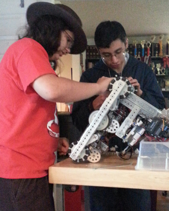

--Written by Omar--

Task: Restart robot basic programs and prepare it for later changes
Today was a mechanical day for Iron Reign. Our goal was to make sure that our robot from last year was able to
move with some basic demo code, and this was achieved easily.
We have been using a base robot for the last two years, which we have named "Kaibosh." It is rather heavy, and has 6 wheels:
4 omniwheels, and 2 normal wheels. Previously, we even had a large spine attached to it that had an even larger arm with multiple
hinges. One of the activities we had during this meeting was the removal of this spine, as depicted to the right. Many small nuts
had to be removed in order to loosen the base of the spine from the base of Kaibosh.
Reflections:
With our boring, but mandatory task of rebooting the robot out of the way, we can now proceed to altering the design to prepare for this year's competition. Our base has always been efficient
no matter the task so that will most likely be kept in place. The main problem we face is producing a new scoring mechanism and possible ideas will be posted as we discuss them.